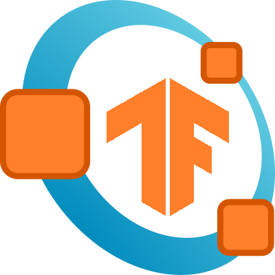

 TensorFlow interface for GNU Octave
Octave Packages
GNU Octave website
tensorflow
0.1.1 2024-6-30
TensorFlow interface for GNU Octave.
Select Category:
Octave API
Octave API
tensorflow
This is a TensorFlow binding for GNU Octave.